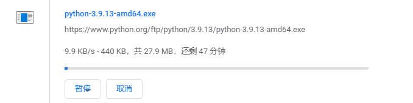

本篇文章预计用时 30~60 min
网上有很多 MkDocs 教程，但是经常没有考虑到没有翻墙手段的人。因此有了这篇文章。
在终端输入 python --version，假如终端输出了 Python 版本，说明你的电脑里有 Python 了。
假如你的电脑里已经有 python & pip 了，请跳到下一节。
本节预计用时 5 分钟
我们尝试去 Python 官网，结果进入官网就（可能）要好久。
你会发现，Python 官网下载在国内奇慢无比。

不愿意等？可以选择淘宝镜像：https://registry.npmmirror.com/binary.html?path=python/3.9.9/

接着，选择适合你系统的软件包下载，比如 Windows x86-64 应当选择 amd64 下载，而 MacOS 应选择 macos11.pkg 下载。
运行软件包即可（install now）。注意勾选下面的 Add Python 3.9 to PATH。

现在你也是拥有 Python 的人了！
Check 一下：输入 python --version，如果输出 Python 3.9.9 就对了。
本节预计用时 2 分钟
常规的 pip install mkdocs 十分的慢，因为不管是 mkdocs 还是 material 都是外网的，下得和 python 一样慢。
因此我们请出 TUNA！进入：https://mirrors.tuna.tsinghua.edu.cn/help/pypi。

按照上面说的，使用以下指令下载 MkDocs:
pip install -i https://pypi.tuna.tsinghua.edu.cn/simple mkdocs
使用以下指令来下载 Material:
pip install -i https://pypi.tuna.tsinghua.edu.cn/simple mkdocs-material
一下简单了不少，不是吗？
在下载的过程中，我们有一点空闲时间，可不要浪费了！
如果你想让风格自由一点的话，可以去学一下手册：
MkDocs: https://www.mkdocs.org/
Material: https://squidfunk.github.io/mkdocs-material/reference/
但是我这里也提供一份简单的模板，已经足够用了。是我之前建的一个离线站 CLRS-Offline-Solutions。
模板示例 1：

模板示例 2：

如果你不想根据模板来做的话，请跳至下一节。
本节预计用时 5~10 min
如果有能力的话，可以直接通过 GitHub 下载/clone。
URL: https://github.com/robinyqc/CLRS-Offline-Solutions.git
直接下载 .zip 文件：https://github.com/robinyqc/CLRS-Offline-Solutions/archive/refs/heads/main.zip
但是再国内无手段的话还是很慢。可以考虑 gitee 转存，再下载到本地。

点击“新建”，然后点击“在其他网站已经有仓库了吗？ 点击导入”。或者直接进入这个链接：https://gitee.com/projects/import/url。然后把刚才我提供的 URL 导入：

可能中途会导入失败，没事，等一会，再刷新一下应该就好了。预计用时 2min。
进入仓库，点击“下载 ZIP”即可。
本节预计用时 20 min
这里就只说一下怎么根据我的模板进行改动。（也请参考：https://squidfunk.github.io/mkdocs-material/creating-your-site/#advanced-configuration）
根目录下应当有这些文件：
Mode Length Name
---- ------ ----
d----- custom
d----- docs
d----- site
-a---- 66 .gitattributes
-a---- 9 .gitignore
-a---- 1085 LICENSE
-a---- 24255 mkdocs.yml
-a---- 5552 README.md
其他文件的可以不用管，只用改写 mkdocs.yml 就可以了。建议使用 VSCode 编写。不能改的地方已经标明。YAML 文件本身易读，结合词典和自身英语能力，按照注释和自己的需求改就行了。
costom 文件夹已经配置好了，不需要动。
进入 docs 文件夹，你的 MarkDown 源文件应当发布在里面。这个文件夹里面目前应当有：
Mode Length Name
---- ------ ----
d----- assets
d----- Chap01
d----- Chap02
d----- Chap03
...... // 31 Chapter folder
d----- Chap35
d----- img
d----- js
-a---- 4698 index.md
进入 assets 文件夹，修改 favicon.png 为你想要的网站图标。cover.png 可以删除。
中间的若干个 chap 文件夹，就是储存 MarkDown 文件的地方。可以删掉。
img 文件夹也可以删掉。这些都是文档内容，你应该换成自己的。
js 文件夹里面储存了 MathJax。不要删，否则你的数学公式无法渲染。
最后的 index.md 也可以删掉。
总的来说，docs 文件夹储存的是你要发布的 MarkDown 源码。如何储存，什么路径，随你便。
以上就是配置。
然后是利用 mkdocs 编译以及利用 python 预览。
回到根目录，在终端输入命令：
mkdocs build
等待生成即可。假如报错，说明配置出现了错误，请修改配置。
不急着发布，先让我们在本地预览成果，如果不理想，就再修改。进入 site 文件夹，输入如下指令：
python -m http.server
他会返回一个接口，通常是 8000. 接着你就可以通过在浏览器里面输入 localhost:8000 来线下预览你的网页了。

ctrl+c 即可退出 python server。
本节预计用时 10 min
参考文章：用 Material for MkDocs 来生成专业的技术文档
首先你可能需要 Git。这也可以从淘宝镜像下载：https://registry.npmmirror.com/binary.html?path=git-for-windows/v2.41.0.windows.1/
具体来说，假设你已经创建了一个Git 仓库，需要做下面的事情：
mkdocs.yml 和docs 目录提交到Git仓库.github/workflows/ci.yml，写入下面的内容并提交到GitHub:name: ci
on:
push:
branches:
- master
- main
permissions:
contents: write
jobs:
deploy:
runs-on: ubuntu-latest
steps:
- uses: actions/checkout@v3
- uses: actions/setup-python@v4
with:
python-version: 3.x
- run: echo "cache_id=$(date --utc '+%V')" >> $GITHUB_ENV
- uses: actions/cache@v3
with:
key: mkdocs-material-${{ env.cache_id }}
path: .cache
restore-keys: |
mkdocs-material-
- run: pip install mkdocs-material
- run: mkdocs gh-deploy --force
Settings -> Pages -> Build and deployment 部分，Source 选项选择 "Deploy from a branch", Branch 选择gh-pages, folder 选择 /(root) 经过这个配置后，每次向 master 或 main 分支 push 代码，会自动更新 user.github.io/repo下的文档。
访问你的 GitHub Pages 来确认工作是否完成。如果情况很理想，恭喜你！你的网站就这样搭建好了！